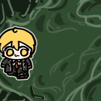

아들 키우는 엄마들 경악했다는 릴스
댓글

친구 딸은 애 엄마 등에 매달려서 멱살잡고 빨리 걸으라고 비명지르던데..
왜 안굴러댕김?
Ai 라 그런거 아님?
댓글중에 그런댓글도 있었음 "딸들중엔 저런애도 있지만 아들중엔 저런애 한명도 없다"
우리딸도 저래서 어디 공원가서 앉아서 쫑알쫑알 하면서 간식먹고 행복했는데
둘째 아들놈...앉히면 주르륵 미끄러지듯 내려가서 달리기 시작함...그럼 따라서 뛰어야해...
나랑 똑같네 ㅋㅋ
지금은 5살이라서 돌아다녀도 내눈안에만 있으면 난 그냥 앉아있는데
2년전만해도 계속 따라다녀야함 ㅠㅠ
난 이제 2살이라...비틀비틀 뛰어다녀서 존나 매번 초 긴장..ㅋㅋ
어떻게 앉아있는거에요?
대체 어떻게 저 긴시간을?
우리딸도 밖에 앉아서 대화하는거 좋아하긴함
??? : 사진 좀 찍게 가만 있어봐 쫌
울 조카는 여자애인데도 굴러다님
기질차이임
울조카는 여자애가 초딩때 생선으로 축구공사달랬었다
예전에 조카들 봐줄 때 남자애들은 뛰면서 놀아주고 여자애들은 앉아서 놀아주게 되는 ㅋㅋㅋ


우리 딸은 불가능...초반 토크 좋아서 튀어나감